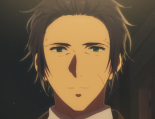
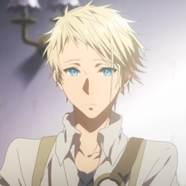
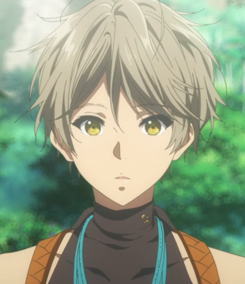

The Great War finally came to an end after four long years of conflict; fractured in two, the continent of Telesis slowly began to flourish once again. Caught up in the bloodshed was Violet Evergarden, a young girl raised for the sole purpose of decimating enemy lines. Hospitalized and maimed in a bloody skirmish during the War's final leg, she was left with only words from the person she held dearest, but with no understanding of their meaning.
Recovering from her wounds, Violet starts a new life working at CH Postal Services after a falling out with her new intended guardian family. There, she witnesses by pure chance the work of an "Auto Memory Doll," amanuenses that transcribe people's thoughts and feelings into words on paper. Moved by the notion, Violet begins work as an Auto Memory Doll, a trade that will take her on an adventure, one that will reshape the lives of her clients and hopefully lead to self-discovery.
Synopsis
Violet is a soldier in the Leidenschaftlich Army who served under Major Gilbert Bougainvillea, who she was utterly devoted to. However, Violet is injured after a mission which resulted in the loss of her arms, requiring them to be replaced with prosthesis. Colonel Hodgins, an old acquaintance of Gilbert, arrives to pick up Violet. He explains to Violet that the war they were fighting has ended and peace has come, though he is unwilling to tell Violet what happened to Gilbert. They leave for the capital city of Leiden, where Gilbert had already arranged for Violet to be adopted by the Evergarden family.
However, Violet cannot adjust to civilian life due to her military indoctrination. Hodgins then decides to show Violet his business, the CH postal company which acts as a private mail and ghostwriting service and hires her as a postal worker. She then witnesses the Auto Memory Dolls of the ghostwriting department writing a letter for an illiterate man who wants to proclaim his love to someone. Violet then remembers that "I love you" were the last words Gilbert had told her. Wanting to know the meaning of the words, Violet asks Hodgins for her to join the ghostwriting department. Impressed that Violet has finally shown signs of acting on her own free will instead of on someone else's orders, Hodgins accepts Violet's request despite her not being an Auto Memory Doll.
| Appearance | Name | Voice Actor | Episodes Shown |
|---|---|---|---|
 |
Violet Evergarden | Yui Ishikawa |
|
| Claudia Hodgins | Takehito Koyasu |
|
|
|  | Gilbert Bougainvillea | Daisuke Namikawa |
|
| Cattleya Baudelaire | Aya Endo |
|
|
|  | Benedict Blue | Koki Uchiyama |
|
| Erica Brown | Minori Chihara |
|
|
|  | Iris Cannary | Haruka Tomatsu |
|